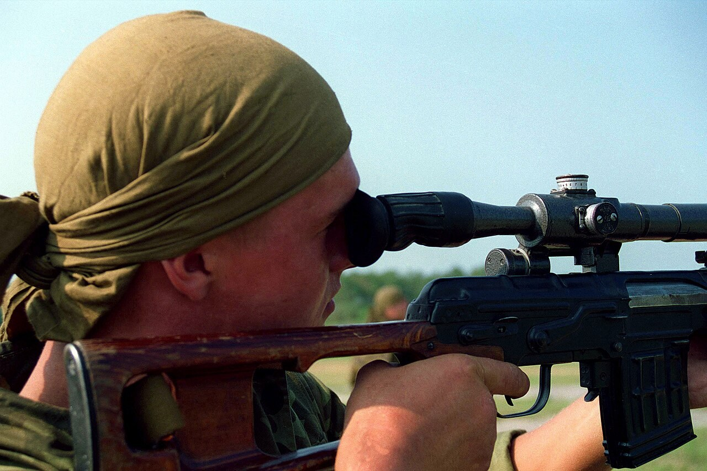

1 — ұңғыны қауіпсіз бағытқа · 2 — саусақ спускалық ілмектен тыс (қаптамада) · 3 — патронникті тексер
1 — muzzle in a safe direction · 2 — finger off the trigger (outside the guard) · 3 — check the chamber
1 — ствол в безопасном направлении · 2 — палец вне спускового крючка · 3 — проверь патронник · Фото: Wikimedia Commons (Public domain)
Бұл не және не үшін
What It Is and Why
Что это и зачем
Қауіпсіздік шаралары — кездейсоқ атыстың, жарақаттың және адам өлімінің алдын алатын, қарумен жұмыс істеудің міндетті ережелері. Олар әрқашан және кез келген жерде — оқ-дәрі бар-жоғына, қарудың түріне қарамастан — орындалады. Атыс кезіндегі жазатайым оқиғалардың басым бөлігі дәл осы ережелердің бұзылуынан туындайды.
Safety rules are the mandatory rules of handling a weapon that prevent an accidental shot, injury and death. They apply always and everywhere — regardless of whether the weapon is loaded or what type it is. The vast majority of firearm accidents are caused precisely by breaking these rules.
Меры безопасности — обязательные правила обращения с оружием, исключающие случайный выстрел, травму и гибель людей. Они действуют всегда и везде — независимо от того, заряжено оружие или нет и какого оно типа. Подавляющее большинство несчастных случаев со стрелковым оружием происходит именно из-за нарушения этих правил.
Төрт басты ереже
The Four Core Rules
Четыре главных правила
1 · Қаруды әрқашан зарядталған деп есепте1 · Always treat every weapon as loaded1 · Считай любое оружие всегда заряженным
Тексергеннен кейін де солай ұста.Treat it so even after you have checked it.Даже после проверки.
2 · Ұңғыны тек қауіпсіз бағытқа қарат2 · Point the muzzle only in a safe direction2 · Направляй ствол только в безопасную сторону
Адамдар жоқ, оқ тоқтайтын бағытқа.Where no one is, and a round would stop safely.Туда, где нет людей и пуля остановится.
3 · Атуға дайын болғанша саусақты ілмектен алыс ұста3 · Keep your finger off the trigger until ready to fire3 · Держи палец вне спускового крючка до готовности к выстрелу
Саусақ ілмек қаптамасынан тыс, рамаға тіреліп тұрады.Index finger rests outside the trigger guard, along the receiver.Палец лежит вне скобы, вдоль ствольной коробки.
4 · Нысананы және оның артындағыны біл4 · Know your target and what is beyond it4 · Знай свою цель и что находится за ней
Оқ нысананы өтіп кетуі мүмкін.A round may pass through or past the target.Пуля может пройти насквозь или мимо.
Қосымша міндетті ережелер
Additional Mandatory Rules
Дополнительные обязательные правила
- !
Қаруды адамға бағыттама — ол разрядталған болса да, әзіл-қалжың ретінде де.
Never point a weapon at a person — even unloaded, even as a joke.
Никогда не направляй оружие на человека — даже разряженное и даже в шутку.
- !
Қаруды беру алдында және ғимаратқа кірерде міндетті түрде разрядта, патронникті көзбен тексер.
Always unload before handing the weapon over or entering a building, and visually check the chamber.
Перед передачей оружия и входом в помещение обязательно разряди и осмотри патронник.
- !
Қаруды қараусыз, бөгде адамдар қол жеткізе алатын жерде қалдырма.
Never leave a weapon unattended or within reach of unauthorised persons.
Не оставляй оружие без присмотра и в доступном для посторонних месте.
- !
Тазалауды, майлауды және жөндеуді тек разрядталған қарумен жаса.
Clean, lubricate and service only an unloaded weapon.
Чистку, смазку и обслуживание выполняй только на разряженном оружии.
- !
Зарядтау мен разрядтауды тек басшының командасы бойынша, белгіленген жерде орында.
Load and unload only on the leader's command, at the designated place.
Заряжай и разряжай только по команде руководителя, в указанном месте.
- !
Ақаулы немесе күмәнді қарудан атпа — оны бірден басшыға хабарла.
Do not fire a faulty or suspect weapon — report it to the leader at once.
Не стреляй из неисправного или сомнительного оружия — сразу доложи руководителю.
Оқ-атыс алаңындағы командалар
Range Commands
Команды на стрельбище
| КомандаCommandКоманда |
Атқарушының әрекетіRequired actionДействие исполнителя |
| «Оқта»"Load"«Заряжай» |
Оқжатарды жалғап, патронды патронникке жіберіп, сақтандырғышқа қою.Attach the magazine, chamber a round, set the weapon to safe.Присоединить магазин, дослать патрон, поставить на предохранитель. |
| «От»"Fire"«Огонь» |
Сақтандырғышты алып, прицелдеп ату.Take off safe, aim and fire.Снять с предохранителя, прицелиться и вести огонь. |
| «Тоқта»"Cease fire"«Стой» / «Прекратить огонь» |
Атуды дереу тоқтатып, саусақты ілмектен алып, сақтандырғышқа қою.Stop firing immediately, finger off the trigger, set to safe.Немедленно прекратить огонь, палец вне крючка, поставить на предохранитель. |
| «Разрядта»"Unload"«Разряжай» |
Оқжатарды алып, патронникті босатып, көзбен және командирге тексерту.Remove the magazine, clear the chamber, show clear to the supervisor.Отделить магазин, освободить патронник, предъявить оружие к осмотру. |
Осек немесе іркіліс кезінде
On a Misfire or Stoppage
При осечке или задержке
Сасқалақтама, абыржыма — сабырлы әрекет ет.Do not panic — act calmly and deliberately.Не паникуй — действуй спокойно и обдуманно.
Ұңғыны қауіпсіз бағытта ұстауды жалғастыр, саусақты ілмектен алып таста.Keep the muzzle pointed in a safe direction and take your finger off the trigger.Продолжай удерживать ствол в безопасном направлении, убери палец со спуска.
Кемінде 5–10 секунд күт — кешеуілдеген (затяжной) атыс болуы мүмкін.Wait at least 5 to 10 seconds — a delayed (hang-fire) discharge is possible.Выжди не менее 5–10 секунд — возможен затяжной выстрел.
Содан кейін ғана жақтауды артқа тартып, патронды шығарып, іркілісті жой.Only then cycle the action, eject the round and clear the stoppage.Только после этого передёрни раму, извлеки патрон и устрани задержку.
Іркіліс қайталанса немесе себебі белгісіз болса — атуды тоқтат та, басшыға хабарла.If the stoppage repeats or its cause is unclear, stop firing and report to the leader.Если задержка повторяется или причина неясна — прекрати стрельбу и доложи руководителю.
Сақтау және тасымалдау
Storage and Carriage
Хранение и переноска
- 1
Қару мен оқ-дәрі бөлек, күзет астында, разрядталған күйде сақталады.
Weapons and ammunition are stored separately, under guard, in an unloaded state.
Оружие и боеприпасы хранят раздельно, под охраной, в разряженном состоянии.
- 2
Берілген және қайтарылған қару саны журналға жазылып, есепке алынады.
Every weapon issued and returned is logged and accounted for.
Каждое выданное и возвращённое оружие учитывается и записывается в журнал.
- 3
Тасымалдау кезінде қару сақтандырғышта, ұңғы қауіпсіз бағытта ұсталады.
During carriage the weapon is on safe, with the muzzle in a safe direction.
При переноске оружие на предохранителе, ствол в безопасном направлении.
Маңызды: жазатайым оқиғалардың басым бөлігі — осы ережелердің бұзылуынан. Қарудың разрядталғанына сенімді болмасаң — оны зарядталған деп есепте, ұңғыны қауіпсіз бағытқа қаратып, разрядта да тексер.
Important: most accidents happen because these rules are broken. If you are not certain a weapon is unloaded, treat it as loaded — keep the muzzle safe, then unload and inspect it.
Важно: большинство несчастных случаев происходит из-за нарушения этих правил. Не уверен, что оружие разряжено — считай его заряженным: направь ствол в безопасную сторону, разряди и осмотри.
НВП · АӘД · NVP
Плакат 11 / 30 · Бастапқы әскери дайындықPoster 11 / 30 · Basic Military TrainingПлакат 11 / 30 · Начальная военная подготовка